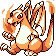

Pokémon GCL Version
This article is outdated
| |
|  | Feel free to update it. Reason given: What happened to this project? |
Pokémon GCL Version is a fan project being worked on by the staff of Glitch City Labs. It will be a Pokémon game built from the ground up, and is currently unfinished. It will be coded in Java.
Contents
Gameplay
The gameplay of Pokémon GCL Version will be similar to that of the main canon Pokémon games.
Glitches will act differently in this game, as not to delete or damage save files
The specifics are yet to be set down, but the effects of Super Glitch are not going to damage the game in any way. Instead, they will give random status effects. Unpredictable, devastating status effects, but nevertheless, curable.
Story
As the story develops, this will be expanded.
The Legendary Wars
Several years before the start of the game, the world of Pokemon suddenly became a dangerous place. After several economic depressions and a cataclysmic earthquake that separated the countries Kanto and Johto by a new sea, the relationships become understandably strained. When a freighter, determined to cross the border, bulled towards a Johto cruiser at high speeds, it was blown out of the water as the crew panicked. The resulting chain of events set off a massive war, essentially a brawl of countries as all continents battled for control. Near the end of the war, the countries began using the famed Legendary Pokemon, possessing of awesome power, as WMDs. The resulting absolute worldrape convinced them that peace was needed. A treaty was formed- The Allied Continents was born.
Heiko
One island, a province of Kanto called Heiko, was spared. It grew in population as the economy recovered. This is where the game begins.
The Glitch World and Glitches
Shortly into the game (Heiko isn't too large) you find the Glitch World, a terrifying realm of data and monsters called Glitches, which serve as a more unconventional Pokemon. The hostile environment is attempting to be settled by the Allied Continents, who tout it as the Next Frontier, and charge high fees to enter it. The death-to-entrance rate is 1:3, for now.
Characters
Major characters
The Protagonist
The main character. As usual, they will probably be a silent protagonist, and he or she will be good friends with the Professor Yew.
Professor Yew
The person who gives the player his or her Pokémon. Also plays a larger role in the story than most of the Professors of the main canon Pokémon games do.
JACRED
Leader of an army hailing from the Glitch World trying to take control of everything. Made up of the misfits and criminals of the older times, they have willingly sacrificed their bodies and sometimes even minds to strike back at what they see as an oppressive regime. Jacred himself has other motivations, but what they are remain to be seen.
Rival
The rival of the protagonist, who will probably show up at various times to battle with him or her. Will be based off of Mugendai in some way.
Other characters
Gym Leaders
Gakiro
The first Gym Leader. Will be based off of Missing? NO! in some way. He was chosen because he is the Local Moderator of Introductions, and being the first Gym Leader he would be introducing the player to Gym Leader battles. Also, he is planned to rematch the player as a high up member in JACRED's army.
Stak
The second Gym Leader. Will be based off of Wack0 in some way. His name was derived from Wack0's former name Stackout. Was originally to be the first Gym Leader.
Tag Battle
The third Gym battle will be against two tag Gym Leaders, based off of peachY and SCared_Fir3. Their official names have not yet been decided.
Fourth Gym Leader
The fourth Gym Leader. Will be based off of MissingNo (GCLF Staff member) in some way. His official name has not yet been decided.
Fifth Gym Leader
The fifth Gym Leader. Will be based off of XD003 in some way. His official name has not yet been decided.
Sixth Gym Leader
The sixth Gym Leader. Will be based off of Glitch Researcher in some way. His official name has not yet been decided.
Seventh Gym Leader
The seventh Gym Leader. Will be based off of Boxman in some way. His official name has not yet been decided.
Ryuu Azul
The eigth, and final, Gym Leader. Will be based off of Bluelatios in some way. His name comes from ryuu, the Japanese word for dragon (Latios's type being Dragon), and azul, the Spanish word for blue (Latios being blue).
Abwayax
The champion of the Pokémon League. Will be based off of Abwayax in some way.
Elite Four
Zach
The first member of the Elite Four. Will be based off of Zach the Glitch Buster in some way.
Second Member
The second member of the Elite Four. A name for him has not been decided yet. Will be based off of IIMarckus in some way.
Xeric
The third member of the Elite Four. Will be based off of GARY 'M 9 in some way.
Third Member
The third member of the Elite Four. His official name has not yet been decided. Will be based off of Newo in some way.
Ernest Zelpin
A high-ranking member in JACRED's army. Will be based off of Sir Not Appearing In This Film in some way. It is predicted that he may use quotes from Beatles songs.
The Great 8
The Great 8 are eight trainers that must be defeated before the Elite Four can be challenged. They are lined up at the exit of Victory Road, so they are unavoidable. They can only be battled once. They were originally going to be called the Lucky 7, however later Tombstoner was added to the roster, making there be eight trainers. They are all based off of both retired staff and staff that did not get Gym Leader or Elite Four positions.
First Member
The first member of the Great 8. Will be based off of Hydrall in some way.
Second Member
The second member of the Great 8. Will be based off of Sorreah in some way.
Zowayix
The third member of the Great 8. Will be Zowayix in some way.
Fourth Member
The fourth member of the Great 8. Will be based off of Foobot in some way.
G-TEIB05
The fifth member of the Great 8. Will be based off of Tombstoner in some way. The G codename comes from Guy, his former username. The TEIB comes from "The Enclosed Instruction Book", as Tombstoner is a fan of quotes from games for the Philip's CD-I. The 05 comes from him being the fifth member of the Great 8.
Sixth Member
The sixth member of the Great 8. Will be based off of xparasite9 in some way.
Seventh Member
The seventh member of the Great 8. Will be based off of Yuzihax in some way.
Locke
The eighth, and final, member of the Great 8. Will be based off of Locke Yggdrasill in some way.